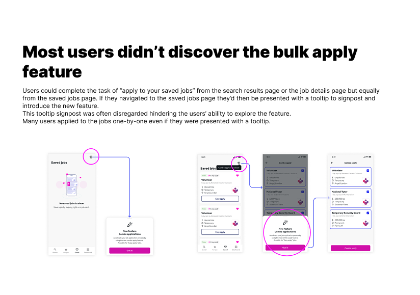
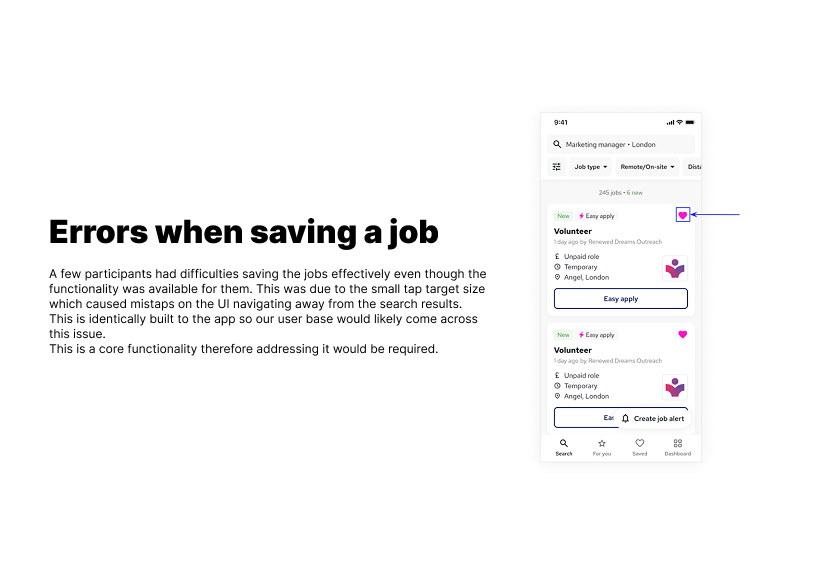
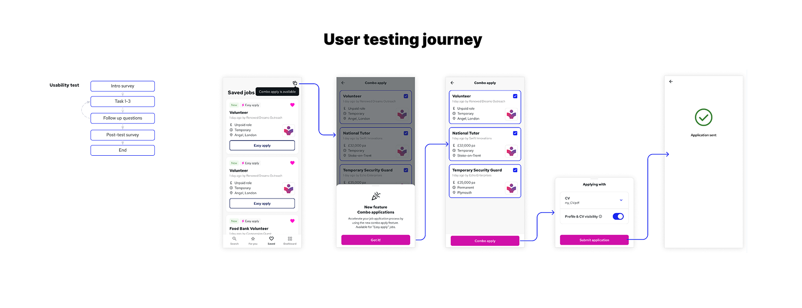

Users couldn't find the bulk apply feature. We ran usability research to find out why, redesigned the entry point, and shipped it — driving a 13% increase in applications per user.
The problem
Reed had built a bulk apply feature — Combo Apply — to help job seekers submit multiple applications at once. The business target was clear: increase applications per user from 0.66 to 0.8. But early data showed users weren't engaging with it. They were still applying one job at a time.
Before investing further in the feature, the team wanted to understand why. Were users ignoring it? Not finding it? Not understanding it? I ran a round of moderated usability testing to find out.
"Can users find and use the Combo Apply feature? And if not — why not?"
Research brief, Q3 2024Research findings
Moderated usability sessions with job seekers across three tasks: save a job, find Combo Apply, submit applications.


The core insight
The feature wasn't hidden — it was passive. A tooltip that appears once puts the burden on the user to notice it at exactly the right moment. Most don't. And a broken save button meant users couldn't even build the saved jobs list that Combo Apply depends on.
User testing journey
Each session walked participants through the full flow — from an empty saved jobs list through to submitting a Combo Apply. The journey diagram below maps the tasks, decision points and where users dropped off.

The fix
The research pointed to specific problems. None required rebuilding the feature — only changing how and where it was surfaced.
Outcome
The research didn't just validate a hypothesis — it changed what we built. The original plan was to promote the feature harder. The finding was that promotion wasn't the problem — placement was. That distinction saved the team from investing in the wrong solution.
Note: final shipped screens are under NDA. Mockups above represent the design direction approved for development.